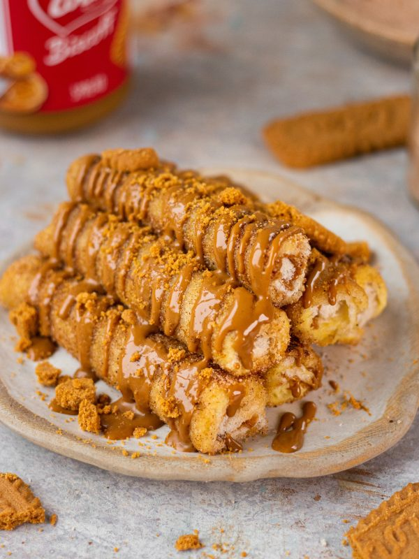
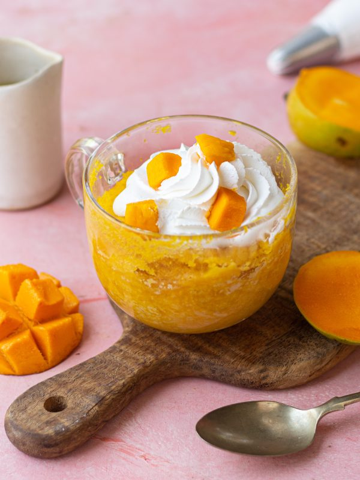

Don’t you all just love cookies like I do? I
know most of you will have cookie dough balls stuffed in your freezer
like mine! Well here is an indulgent and such a simple recipe for all
your cookie cravings! As a child, I loved Ferrero Rocher so much and I
wanted to create something…
Read More
BISCOFF ROLL FRENCH TOASTS
Super fun to make, impressive and crowd
pleasing, these biscoff roll french toasts are a creative breakfast
treat for any day of the week! I love to play around when it comes to
first meal of the day. Usually, I have something savoury to go with my
coffee but other days, when I am craving…
Read More


MANGO MUG CAKE
With the mango season in full swing, it’s the perfect
time to go to your kitchens and whip up a mango dessert. Bursting with
mango flavour, this mango mug cake is soft, delicious and super simple
to put together. I love mangoes in all forms truly! And when paired in
my desserts its like the…
Read More